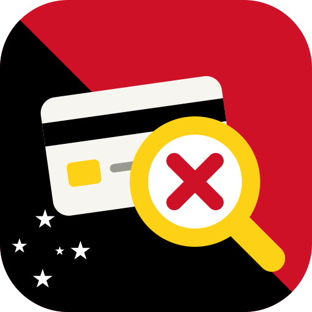

KaruScan Privacy Policy
Last updated 6 October 2026
The short version
KaruScan does not collect, send, sell or share any of your information. Everything happens on your own phone, tablet or computer.
Your bank statements
When you add a statement, KaruScan reads it inside your web browser. The file and its contents are never uploaded to any server, including ours. There is no KaruScan server that receives data.
What is saved, and where
So that you don't lose your work, KaruScan saves the payments it found and your choices (such as "last used" and "cancelled on") in your browser's own storage on your device. Only you can see it. It stays until you press Erase all data in KaruScan's settings, or clear your browser's site data.
Accounts, tracking and advertising
KaruScan has no sign-in, no analytics, no tracking cookies and no advertising.
Other websites
KaruScan loads its fonts from Google Fonts, which receives a normal web request (such as your IP address) when the fonts download. No statement data is included. When you tap a link to a company's billing page, you leave KaruScan and that company's own privacy policy applies.
Letters and emails
The cancellation emails and bank dispute letters are written on your device and copied to your clipboard. KaruScan never sends them. You choose whether and where to paste them.
Children
KaruScan is meant for adults managing their own bank or card accounts.
Changes and contact
If this policy changes, the new version will be posted on this page with a new date. Questions can be raised on the KaruScan project page on GitHub.